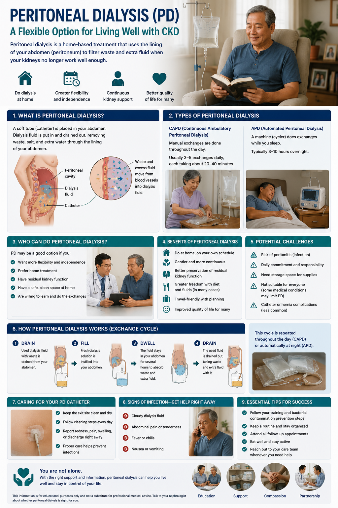
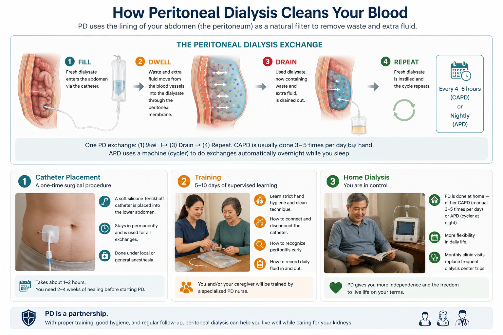

What Is Peritoneal Dialysis? Ano ang Peritoneal Dialysis? Unsa ang Peritoneal Dialysis? Nanung ing Peritoneal Dialysis?
Peritoneal dialysis (PD) uses your own body as the dialysis machine. The peritoneum — the thin membrane lining your abdominal cavity — acts as a natural filter. A special cleansing fluid (dialysate) is introduced into the abdomen through a soft catheter (tube). Waste products and excess fluid pass from the blood through the peritoneal membrane into the dialysate, which is then drained out. This process is called an "exchange." PD is done at home, by the patient or a trained caregiver — without needles, without a machine (in CAPD), and without needing to go to a dialysis center three times a week. Ang peritoneal dialysis (PD) ay gumagamit ng iyong sariling katawan bilang makina ng dialysis. Ang peritoneum — ang manipis na lamad na naglinya sa iyong lukuban — ay gumaganap bilang natural na filter. Ang espesyal na likidong panglinis (dialysate) ay ipinakilala sa tiyan sa pamamagitan ng malambot na catheter (tubo). Ang mga dumi at labis na likido ay dumadaan mula sa dugo sa pamamagitan ng peritoneal membrane papunta sa dialysate, na pagkatapos ay pinapalabas. Ang prosesong ito ay tinatawag na "exchange." Ang peritoneal dialysis (PD) naggamit sa imong kaugalingong lawas ingon ang makina sa dialysis. Ang peritoneum — ang manipis nga panit nga naglinya sa imong tiyan — nagserbisyo ingon natural nga filter. Ang espesyal nga likido nga panglimpyo (dialysate) gipaila sa tiyan pinaagi sa humok nga catheter (tubo). Ang mga basura ug sobra nga likido motabok gikan sa dugo pinaagi sa peritoneal membrane ngadto sa dialysate, nga pagkahuman gilugnot. Ing peritoneal dialysis (PD) gumagamit ning sariling katawan mo bilang makina ning dialysis. Ing peritoneum — ing manipis a lamad a naglinya king lukuban mo — gumaganap bilang natural a filter. Ing espesyal a likidong panglinis (dialysate) ipinakilala king tiyan sa pamamagitan ning malambot a catheter (tubo). Deng dumi at labis a likido dumadaan mula king dala sa pamamagitan ning peritoneal membrane papunta king dialysate, a pagkatapos pinapalabas.

An overview of peritoneal dialysis as a flexible, home-based option for kidney failure, covering what it is, its types, who can do it, the benefits and challenges, the exchange cycle, catheter care, and signs of infection.
How Peritoneal Dialysis Cleans Your Blood Paano Nililinis ng Peritoneal Dialysis ang Iyong Dugo Giunsa Pagpalimpyo sa Peritoneal Dialysis ang Imong Dugo Panung Nililinis ning Peritoneal Dialysis Ing Dala Mo

A step-by-step diagram of how peritoneal dialysis cleans the blood through the fill, dwell, drain, and repeat exchange cycle, along with catheter placement, training, and doing dialysis at home.
Catheter placement — a one-time surgical procedurePaglalagay ng catheter — isang beses na operasyonPagbutang sa catheter — kausa nga operasyonPaglalagay ning catheter — metung a beses a operasyon
A soft silicone Tenckhoff catheter is surgically placed into the lower abdomen. It stays in permanently and is used for all exchanges. The procedure is done under local or general anesthesia and takes about 1–2 hours. You need 2–4 weeks of healing before starting PD.Ang malambot na silicone Tenckhoff catheter ay kinokonekta sa ibabang tiyan sa pamamagitan ng operasyon. Nananatili ito nang permanente at ginagamit para sa lahat ng exchange. Ang pamamaraan ay ginagawa sa ilalim ng lokal o pangkalahatang anestesya at tumatagal ng humigit-kumulang 1–2 oras.Ang humok nga silicone Tenckhoff catheter gibutang sa operasyon sa ubos nga tiyan. Nagpabilin kini sa permanente ug gigamit alang sa tanan nga exchange. Ang proseso gibuhat sa ilalim sa lokal o kinatibuk-ang anestesya ug molungtad og mga 1–2 ka oras.Ing malambot a silicone Tenckhoff catheter kinokonekta king ibabang tiyan sa pamamagitan ning operasyon. Nananatili iti nang permanente at ginagamit para king sablang exchange. Ing pamamaraan ginagawa sa ilalim ning lokal o pangkalahatang anestesya at tumatagal ning mga 1–2 oras.
Training — 5–10 days of supervised learningPagsasanay — 5–10 araw ng nasusubaybayan na pag-aaralPagbansay — 5–10 ka adlaw sa gisuholan nga pagkat-onPagsasanay — 5–10 araw ning nasusubaybayan a pag-aaral
You and/or your caregiver will be trained by a specialized PD nurse on how to perform exchanges safely at home — including strict hand hygiene, how to connect and disconnect the catheter, how to recognize peritonitis early, and how to document your daily fluid balance.Ikaw at/o ang iyong tagapag-alaga ay sisusubaybayan ng espesyalidad na PD nurse sa kung paano magsagawa ng mga exchange nang ligtas sa bahay — kabilang ang mahigpit na kalinisan ng kamay, kung paano ikonekta at idiskonekta ang catheter, at kung paano makilala ang peritonitis nang maaga.Ikaw ug/o ang imong taga-atiman ibansayan sa espesyalidad nga PD nurse sa kung giunsa pagbuhat sa mga exchange nga luwas sa balay — lakip ang higpit nga kalinisan sa kamot, kung giunsa konektahan ug disconnectahan ang catheter, ug kung giunsa mahibal-an ang peritonitis nang sayo.Ika at/o ing taga-alaga mo ibansayan ning espesyalidad a PD nurse kung panung magsagawa ning deng exchange nang ligtas king bale — kasama ing mahigpit a kalinisan ning kamay, kung panung ikonekta at idiskonekta ing catheter, at kung panung makilala ing peritonitis nang maaga.
Home dialysis — you are in controlHome dialysis — ikaw ang kontroladoHome dialysis — ikaw ang nagkontrolHome dialysis — ika ing kontrolado
Once trained, PD is performed at home — either as CAPD (manual exchanges 3–5 times per day) or APD (a cycler machine does exchanges overnight while you sleep). Monthly clinic visits replace the 3×/week dialysis center schedule.Kapag nasanay na, ang PD ay ginagawa sa bahay — alinman bilang CAPD (manu-manong mga exchange 3–5 beses bawat araw) o APD (isang cycler machine ang gumagawa ng mga exchange sa gabi habang natutulog ka). Buwanang pagbisita sa klinika ang pumapalit sa iskedyul ng dialysis center 3×/linggo.Kung nasayran na, ang PD gibuhat sa balay — alinman ingon CAPD (mano-manong mga exchange 3–5 ka beses matag adlaw) o APD (usa ka cycler machine ang nagbuhat sa mga exchange sa gabii samtang natulog ka). Bulanang pagbisita sa klinika ang nagilis sa iskedyul sa dialysis center 3×/semana.Kapag nasanay na, ing PD ginagawa king bale — alinman bilang CAPD (mano-manong deng exchange 3–5 beses kada araw) o APD (metung a cycler machine ing gumagawa ning deng exchange king gabi habang natutulog ka). Buwanang pagbisita king klinika ang pumapalit king iskedyul ning dialysis center 3×/linggo.
CAPD vs APD: Two Ways to Do PD CAPD vs APD: Dalawang Paraan ng Paggawa ng PD CAPD vs APD: Duha ka Paagi sa Paggawa sa PD CAPD vs APD: Adwang Paraan ning Paggawa ning PD
CAPD — Continuous Ambulatory PDTuluy-tuloy na Ambulatory PDContinuous Ambulatory PDTuluy-tuloy a Ambulatory PD
Machine-free. 3–5 exchanges per day, each taking 20–30 minutes. You can eat, talk, and rest during the dwell phase (2–4 hours). Simple and low-cost — no electricity needed. Best for patients who can manage their own schedule and live in rural areas with no reliable power. The most common PD method in the Philippines.Walang makina. 3–5 exchange bawat araw, bawat isa ay tumatagal ng 20–30 minuto. Maaari kang kumain, makipag-usap, at magpahinga sa panahon ng dwell phase. Simple at murang mura — hindi kailangan ng kuryente. Pinakamainam para sa mga pasyente sa mga rural na lugar.Walay makina. 3–5 ka exchange matag adlaw, ang matag usa molungtad og 20–30 minuto. Mahimo kang mokaon, mag-istoryahanay, ug mapahulay atol sa dwell phase. Simple ug barato — dili kinahanglan ang kuryente.Walang makina. 3–5 exchange kada araw, bawat metung tumatagal ning 20–30 minuto. Maaari kang kumain, makipag-usap, at magpahinga sa panahon ning dwell phase. Simple at mura — hindi kailangan ning kuryente.
APD — Automated PD (Cycler)Automated PD (Cycler)Automated PD (Cycler)Automated PD (Cycler)
Machine-assisted. A cycler machine performs 3–5 exchanges automatically overnight while you sleep (8–10 hours). Days are free — no daytime exchanges needed. Better for working adults, students, or patients who have difficulty with multiple daytime manual exchanges. Requires reliable electricity. Higher PhilHealth coverage available in the Philippines.Tinutulungan ng makina. Ang isang cycler machine ay awtomatikong gumagawa ng 3–5 exchange sa gabi habang natutulog ka (8–10 oras). Ang mga araw ay libre — hindi na kailangan ang mga daytime exchange. Mas mainam para sa mga nagtatrabahong matatanda o mag-aaral.Gitabangan sa makina. Usa ka cycler machine awtomatikong nagbuhat og 3–5 ka exchange sa gabii samtang natulog ka (8–10 ka oras). Ang mga adlaw libre — dili na kinahanglan ang daytime exchange. Mas maayo alang sa mga nagtrabaho o mga estudyante.Tinutulungan ning makina. Metung a cycler machine awtomatikong gumagawa ning 3–5 exchange king gabi habang natutulog ka (8–10 oras). Deng araw libre — hindi na kailangan deng daytime exchange. Mas mainam para king deng nagtatrabahong matatanda o estudyante.
Peritoneal Dialysis vs Hemodialysis: Key Differences Peritoneal Dialysis vs Hemodialysis: Mga Pangunahing Pagkakaiba Peritoneal Dialysis vs Hemodialysis: Mga Pangunahing Kalainan Peritoneal Dialysis vs Hemodialysis: Deng Pangunahing Pagkakaiba
| FactorSalikSalikSalik | PD | HD |
|---|---|---|
| LocationLokasyonLokasyonLokasyon | ✅ At home✅ Sa bahay✅ Sa balay✅ King bale | Dialysis center 3×/weekDialysis center 3×/linggoDialysis center 3×/semanaDialysis center 3×/linggo |
| ScheduleIskedyulIskedyulIskedyul | ✅ Daily, flexible timing✅ Araw-araw, nababagay na oras✅ Adlaw-adlaw, nababahin nga oras✅ Araw-araw, nababagay a oras | Fixed sessions, 4–5 hours eachNakatakdang session, 4–5 oras bawat isaNakatakdang session, 4–5 ka oras matag usaNakatakdang session, 4–5 oras bawat metung |
| NeedlesMga karayomMga dagomDeng karayom | ✅ No needles needed✅ Hindi kailangan ng karayom✅ Walay dagom nga kinahanglan✅ Hindi kailangan ning karayom | Two needles per session into fistula/graftDalawang karayom bawat sesyon sa fistula/graftDuha ka dagom matag sesyon sa fistula/graftAdwang karayom bawat sesyon king fistula/graft |
| Residual kidney functionNatitirang kakayahan ng batoNahibilin nga kapabilidad sa kidneyNatitirang kakayahan ning batu | ✅ Better preserved on PD (gradual filtration)✅ Mas mahusay na napanatili sa PD✅ Mas maayo nga natiipig sa PD✅ Mas maayus a napanatili king PD | Residual function often lost faster with HDAng natitirang pag-andar ay madalas na mabilis na nawawala sa HDAng nahibilin nga katungdanan kasagaran paspas nga mawala sa HDIng natitirang paggawa madalas mabilis mawala king HD |
| Fluid fluctuationsMga pagbabago ng likidoMga pagbag-o sa likidoDeng pagbabago ning likido | ✅ More stable — continuous daily removal✅ Mas matatag — patuloy na pang-araw-araw na pag-aalis✅ Mas matatag — padayon nga adlaw-adlaw nga pagtangtang✅ Mas matatag — patuloy a pang-araw-araw a pag-aalis | Large fluid swings between sessionsMalaking pagbabago ng likido sa pagitan ng mga sesyonDagkong pagbabago sa likido tali sa mga sesyonMalaking pagbabago ning likido sa pagtali ning deng sesyon |
| Blood pressure stressStress sa presyon ng dugoStress sa presyon sa dugoStress king presyon ning dala | ✅ Gentler on cardiovascular system✅ Mas malambot sa cardiovascular system✅ Mas hinay sa cardiovascular system✅ Mas malambot king cardiovascular system | Intradialytic hypotension commonAng intradialytic hypotension ay karaniwanAng intradialytic hypotension kasagaranIng intradialytic hypotension karaniwang mangyari |
| Diet restrictionsMga paghihigpit sa pagkainMga pagdili sa pagkaonDeng paghihigpit king pagkain | ✅ Less strict — more dietary freedom✅ Hindi masyadong mahigpit — mas maraming kalayaan sa pagkain✅ Dili kaayo higpit — mas daghang kagawasan sa pagkaon✅ Hindi masyadong mahigpit — mas maraming kalayaan king pagkain | Strict potassium, phosphorus, fluid limitsMahigpit na limitasyon ng potassium, phosphorus, at likidoHigpit nga limitasyon sa potassium, phosphorus, ug likidoMahigpit a limitasyon ning potassium, phosphorus, at likido |
| Infection riskPanganib ng impeksyonRisgo sa impeksyonPanganib ning impeksyon | Peritonitis risk (catheter-related)Panganib ng peritonitis (katulad ng catheter)Risgo sa peritonitis (catheter-related)Panganib ning peritonitis (catheter-related) | Access infection risk (fistula, graft, catheter)Panganib ng impeksyon sa access (fistula, graft, catheter)Risgo sa impeksyon sa access (fistula, graft, catheter)Panganib ning impeksyon king access (fistula, graft, catheter) |
| Who it works best forPara kanino ito pinaka-gumaganaKang kinsa kini pinakamaayo nga molihokPara kaninu iti pinaka-gumagana | Working patients, rural areas, self-sufficient patients, those who value independenceMga nagtatrabahong pasyente, rural na lugar, mga self-sufficient na pasyenteMga nagtrabaho nga pasyente, rural nga lugar, self-sufficient nga pasyenteDeng nagtatrabahong pasyente, rural a lugar, self-sufficient a pasyente | Those needing close supervision, with abdominal issues, or who cannot manage home PDMga nangangailangan ng malapit na pagmamasid, may mga abdominal na isyuMga nagkinahanglan sa suod nga pagbantay, adunay mga abdominal nga problemaDeng nangangailangan ning malapit a pagmamasid, maki deng abdominal a isyu |
Is PD as effective as HD?Kasing epektibo ba ang PD sa HD?Kasing epektibo ba ang PD sa HD?Kasing epektibo ba ing PD sa HD?
For most patients, PD provides equivalent or better survival outcomes compared to hemodialysis — especially in the first 2–3 years on dialysis. Studies from Hong Kong (35 years of PD-first policy), New Zealand, and the Netherlands show that PD patients have equivalent or superior survival in the first 2–5 years, with better preservation of residual kidney function. The key is proper patient selection and training.Para sa karamihan ng mga pasyente, ang PD ay nagbibigay ng katumbas o mas mahusay na kinalabasan ng kaligtasan kumpara sa hemodialysis — lalo na sa unang 2–3 taon sa dialysis. Ang pangunahing bagay ay wastong pagpili ng pasyente at pagsasanay.Alang sa kadaghanan sa mga pasyente, ang PD naghatag sa katumbas o mas maayong kinalabasan sa pagsurvive kumpara sa hemodialysis — ilabi na sa unang 2–3 ka tuig sa dialysis. Ang susi tinuod nga pagpili sa pasyente ug pagbansay.Para king karamihan ning deng pasyente, ing PD nagbibigay ning katumbas o mas maayus a kinalabasan ning kaligtasan kumpara king hemodialysis — lalu na king unang 2–3 taon king dialysis. Ing susi tamang pagpili ning pasyente at pagsasanay.
Catheter Care: Your Most Important Daily Task Pag-aalaga ng Catheter: Ang Pinaka-Mahalagang Pang-araw-araw na Gawain Mo Pag-atiman sa Catheter: Ang Imong Pinaka-Importante nga Adlaw-adlaw nga Buluhaton Pag-aalaga ning Catheter: Ing Pinaka-Mahalagang Pang-araw-araw a Gawain Mo
Peritonitis prevention = catheter care disciplinePag-iwas sa peritonitis = disiplina sa pag-aalaga ng catheterPaglikay sa peritonitis = disiplina sa pag-atiman sa catheterPag-iwas king peritonitis = disiplina king pag-aalaga ning catheter
Peritonitis (infection of the peritoneal membrane) is the leading cause of PD failure and can be life-threatening. 90% of peritonitis cases are caused by technique errors during exchanges — contamination at the connection point. Proper hand hygiene and sterile technique are non-negotiable.Ang peritonitis (impeksyon ng peritoneal membrane) ay ang nangungunang sanhi ng pagpalya ng PD at maaaring makapagbanta ng buhay. 90% ng mga kaso ng peritonitis ay sanhi ng mga pagkakamali sa teknik sa panahon ng mga exchange.Ang peritonitis (impeksyon sa peritoneal membrane) ang nanguna nga hinungdan sa pagpalya sa PD ug mahimong manguy-an sa kinabuhi. 90% sa mga kaso sa peritonitis gidugang sa mga sayop sa teknik atol sa mga exchange.Ing peritonitis (impeksyon ning peritoneal membrane) ing nangungunang sanhi ning pagpalya ning PD at maaaring makapagbanta ning buhay. 90% ning deng kaso ning peritonitis sanhi ning deng pagkakamali king teknik sa panahon ning deng exchange.
Daily Catheter Care Checklist Pang-araw-araw na Checklist ng Pag-aalaga ng Catheter Adlaw-adlaw nga Checklist sa Pag-atiman sa Catheter Pang-araw-araw a Checklist ning Pag-aalaga ning Catheter
- Wash hands with soap and water for at least 20 seconds before every exchangeHugasan ang mga kamay ng sabon at tubig ng hindi bababa sa 20 segundo bago ang bawat exchangeHugasan ang mga kamot sa sabon ug tubig sulod sa labing menos 20 segundo sa wala pa ang matag exchangeHugasan deng kamay ning sabon at tubig ning hindi bababa sa 20 segundo bago bawat exchange
- Clean the catheter exit site daily with antiseptic as instructed by your PD nurseLinisin ang exit site ng catheter araw-araw gamit ang antiseptic ayon sa tagubilin ng iyong PD nurseLimpyohi ang exit site sa catheter adlaw-adlaw pinaagi sa antiseptic sumala sa gitudlo sa imong PD nurseLinisin ing exit site ning catheter araw-araw gamit ing antiseptic ayon king tagubilin ning PD nurse mo
- Inspect the exit site daily for redness, swelling, pain, or dischargeSuriin ang exit site araw-araw para sa pamumula, pamamaga, sakit, o pagdudumiSusihon ang exit site adlaw-adlaw alang sa pamumula, pag-imol, sakit, o pagluwaSuriin ing exit site araw-araw para king pamumula, pamamaga, sakit, o pagdudumi
- Perform exchanges in a clean, closed room — avoid fans or open windows during connectionGawin ang mga exchange sa isang malinis, saradong silid — iwasan ang mga pamaypay o bukas na bintana habang nagkokonektaBuhata ang mga exchange sa usa ka limpyo, sirado nga kwarto — likayi ang mga pamaypay o bukas nga bintana atol sa koneksyonGawin deng exchange king metung a malinis, saradong silid — iwasan deng pamaypay o bukas a bintana habang nagkokonekta
- Always inspect dialysate bags for cloudiness, particles, or damage before usePalaging suriin ang mga bag ng dialysate para sa ulap, mga particle, o pinsala bago gamitinKanunay susihon ang mga bag sa dialysate alang sa ulap, mga particle, o kadaot sa wala pa gamitonPalaging suriin deng bag ning dialysate para king ulap, deng particle, o pinsala bago gamitin
- Record daily weight, blood pressure, fluid balance (drained vs. infused), and any symptomsItala ang pang-araw-araw na timbang, presyon ng dugo, balanse ng likido (na-drain vs. na-infuse), at anumang sintomasIrehistro ang adlaw-adlaw nga timbang, presyon sa dugo, balanse sa likido (nadrained vs nainfused), ug bisan unsang sintomasItala ing pang-araw-araw a timbang, presyon ning dala, balanse ning likido (na-drain vs na-infuse), at aninumang sintomas
Diet on Peritoneal Dialysis Diyeta sa Peritoneal Dialysis Diyeta sa Peritoneal Dialysis Diyeta king Peritoneal Dialysis
Diet on PD is generally less restrictive than on hemodialysis because PD removes waste continuously. However, there are unique nutritional considerations — especially protein loss and glucose absorption from dialysate that affect blood sugar and weight. Ang diyeta sa PD ay karaniwang hindi masyadong mahigpit kumpara sa hemodialysis dahil patuloy na inaalis ng PD ang mga dumi. Gayunpaman, may mga natatanging pagsasaalang-alang sa nutrisyon — lalo na ang pagkawala ng protina at pagsipsip ng glucose mula sa dialysate. Ang diyeta sa PD kasagaran dili kaayo higpit kumpara sa hemodialysis tungod kay padayon ang PD sa pagtangtang sa basura. Bisan pa man, adunay talagsaon nga mga pagsikap sa nutrisyon — ilabi na ang pagkawala sa protina ug pag-uptake sa glucose gikan sa dialysate. Ing diyeta king PD karaniwang hindi masyadong mahigpit kumpara king hemodialysis dahil patuloy a nag-aalis ning basura ing PD. Gayunman, maki deng natatanging pagsasaalang-alang king nutrisyon — lalu na ing pagkawala ning protina at pagsipsip ning glucose mula king dialysate.
Protein — INCREASE neededProtina — Kailangan PALAKASINProtina — Kinahanglan PALABAONProtina — Kailangan PALAKASIN
PD causes daily protein loss of 5–15g through the dialysate. Requirements are HIGHER on PD: 1.2–1.5g/kg/day. Prioritize: eggs, fish (white fish, bangus, tilapia), chicken, lean pork. Protein malnutrition is a major risk on PD.Ang PD ay nagdudulot ng pang-araw-araw na pagkawala ng protina na 5–15g sa pamamagitan ng dialysate. Ang mga kinakailangan ay MAS MATAAS sa PD: 1.2–1.5g/kg/araw. Unahin ang: itlog, isda, manok, payat na baboy.Ang PD nagdala sa adlaw-adlaw nga pagkawala sa protina nga 5–15g pinaagi sa dialysate. Ang mga kinaukayan MAS TAAS sa PD: 1.2–1.5g/kg/adlaw. Unahon: itlog, isda (bangus, tilapia), manok, payat nga baboy.Ing PD nagdudulot ning pang-araw-araw a pagkawala ning protina ning 5–15g sa pamamagitan ning dialysate. Deng kinakailangan MAS MATAAS king PD: 1.2–1.5g/kg/araw. Unahin: itlog, isda, manok, payat a baboy.
Glucose absorption — watch blood sugarPagsipsip ng Glucose — bantayan ang asukal sa dugoPag-uptake sa Glucose — bantayan ang asukal sa dugoPagsipsip ning Glucose — bantayan ing asukal king dala
The dialysate contains glucose (dextrose) as the osmotic agent. The body absorbs 100–300 calories of glucose per day from dialysate — affecting blood sugar control in diabetics and causing weight gain. Lower-glucose dialysate bags are available and should be used when possible, especially for diabetics.Ang dialysate ay naglalaman ng glucose (dextrose) bilang osmotic agent. Ang katawan ay sumusipsip ng 100–300 calorie ng glucose bawat araw mula sa dialysate — nakakaapekto sa kontrol ng asukal sa dugo at nagdudulot ng pagbabago ng timbang.Ang dialysate naglalaman sa glucose (dextrose) ingon osmotic agent. Ang lawas nagsuhop og 100–300 calorie sa glucose matag adlaw gikan sa dialysate — nakaapekto sa kontrol sa asukal sa dugo ug nagdala sa pagbag-o sa timbang.Ing dialysate naglalaman ning glucose (dextrose) bilang osmotic agent. Ing katawan sumusipsip ning 100–300 calorie ning glucose kada araw mula king dialysate — nakakaapekto king kontrol ning asukal king dala at nagdudulot ning pagbabago ning timbang.
Potassium — less restricted than HDPotassium — hindi masyadong pinaghihigpitan kumpara sa HDPotassium — dili kaayo gipigilan kumpara sa HDPotassium — hindi masyadong pinaghihigpitan kumpara king HD
Because PD removes potassium continuously, most PD patients can eat bananas, kamote, and other potassium-rich foods in moderate amounts — a major quality-of-life improvement over HD. Avoid excess, but hyperkalemia is less common on PD. Your nephrologist will guide the specific limit.Dahil patuloy na inaalis ng PD ang potassium, karamihan ng mga pasyente ng PD ay maaaring kumain ng saging, kamote, at iba pang pagkaing may mataas na potassium sa katamtamang dami — isang malaking pagpapabuti ng kalidad ng buhay kumpara sa HD.Tungod kay padayon ang PD sa pagtangtang sa potassium, kadaghanan sa mga pasyente sa PD makakakuha sa saging, kamote, ug uban pang pagkaon nga taas sa potassium sa katamtamang dami — dagkong pagpapauswag sa kalidad sa kinabuhi kumpara sa HD.Dahil patuloy a nag-aalis ning potassium ing PD, karamihan ning deng pasyente ning PD maaaring kumain ning saging, kamote, at iba pang pagkain a mataas king potassium king katamtamang dami — malaking pagpapabuti ning kalidad ning buhay kumpara king HD.
PhilHealth Coverage for PD (2025) Saklaw ng PhilHealth para sa PD (2025) Coverage sa PhilHealth alang sa PD (2025) Coverage ning PhilHealth para king PD (2025)
📋 PhilHealth Z Benefit Package for Peritoneal Dialysis (Circular 2024-0023) 📋 PhilHealth Z Benefit Package para sa Peritoneal Dialysis (Circular 2024-0023) 📋 PhilHealth Z Benefit Package alang sa Peritoneal Dialysis (Circular 2024-0023) 📋 PhilHealth Z Benefit Package para king Peritoneal Dialysis (Circular 2024-0023)
Adult CAPDAdulto na CAPDHamtong CAPDAdulto a CAPD
PHP 389,640–510,140/yearDepending on daily PD solution volume required. Covers supplies and solutions.Depende sa araw-araw na volume ng solusyon na kinakailangan.Depende sa adlaw-adlaw nga volume sa solusyon nga kinahanglan.Depende king pang-araw-araw a volume ning solusyon a kailangan.
Adult APDAdulto na APDHamtong APDAdulto a APD
PHP 763,000–1.2M/yearIncludes the cycler machine supplies and dialysate. Higher coverage reflects APD solution costs.Kinabibilangan ng mga supply ng cycler machine at dialysate.Naglakip sa mga supply sa cycler machine ug dialysate.Kasama deng supply ning cycler machine at dialysate.
Pediatric CAPDPedia CAPDBata nga CAPDBata a CAPD
PHP 510,000–765,210/yearHigher coverage for children, who require more frequent exchanges per body weight.Mas mataas na saklaw para sa mga bata na nangangailangan ng mas madalas na mga exchange.Mas taas nga coverage alang sa mga bata nga nagkinahanglan sa mas padayon nga mga exchange.Mas mataas a coverage para king deng bata a nangangailangan ning mas madalas a deng exchange.
Pediatric APDPedia APDBata nga APDBata a APD
PHP 763,000–1.2M/yearHighest tier of PD coverage. For pediatric patients on automated peritoneal dialysis.Pinakamataas na antas ng coverage ng PD. Para sa mga pediatric na pasyente sa automated peritoneal dialysis.Pinakataas nga antas sa PD coverage. Alang sa mga pediatric nga pasyente sa automated peritoneal dialysis.Pinakamataas a antas ning PD coverage. Para king deng pediatric a pasyente king automated peritoneal dialysis.
PD is more cost-effective for the healthcare system — and can mean less out-of-pocket expenseAng PD ay mas cost-effective para sa sistemang pangkalusugan — at maaaring mangahulugang mas kaunting gastos sa sariling bulsaAng PD mas cost-effective alang sa sistema sa pag-atiman sa kahimsog — ug mahimong nagpasabot sa mas gamay nga gasto gikan sa kaugalingong bulsaIng PD mas cost-effective para king sistema ning pag-aalaga ning kalusugan — at maaaring mangahulugang mas kaunting gastos king sariling bulsa
A Philippine cost-of-illness study (2025) found comparable direct medical costs between HD and PD (~PHP 401,000–560,000/year), but non-medical and indirect costs (transportation, missed work days, caregiver burden) are substantially lower for PD patients — PHP 3,160/year for PD vs PHP 37,920–246,480/year for HD patients.Isang pag-aaral ng gastos sa sakit sa Pilipinas (2025) ay natagpuang katumbas na mga direktang medikal na gastos sa pagitan ng HD at PD, ngunit ang mga hindi medikal at hindi direktang gastos (transportasyon, mga nawawalang araw ng trabaho) ay mas mababa para sa mga pasyente ng PD.Usa ka pag-aaral sa gasto sa sakit sa Pilipinas (2025) nakit-an nga katumbas nga direktang medikal nga mga gasto tali sa HD ug PD, apan ang dili medikal ug dili direkta nga mga gasto (transportasyon, nasagdan nga adlaw sa trabaho) mas gamay alang sa mga pasyente sa PD.Metung a pag-aaral ning gastos king sakit king Pilipinas (2025) natagpuang katumbas a deng direktang medikal a gastos sa pagtali ning HD at PD, ngunit deng hindi medikal at hindi direktang gastos (transportasyon, deng nawawalang araw ning trabaho) mas mababa para king deng pasyente ning PD.
Complications and When to Seek Help Mga Komplikasyon at Kailan Humingi ng Tulong Mga Komplikasyon ug Kanus-a Mangita og Tabang Deng Komplikasyon at Kailan Humingi ning Tulong
🚨 Go to the hospital immediately if you notice:Pumunta agad sa ospital kung napansin mo ang:Punta dayon sa ospital kon namatikdan nimo ang:Pumunta agad king ospital kung napansin mo ing:
Should You Consider Peritoneal Dialysis? Dapat Bang Isaalang-alang ang Peritoneal Dialysis? Angay Ba Nimong Ikonsiderar ang Peritoneal Dialysis? Dapat Bang Isaalang-alang Ing Peritoneal Dialysis?
In the Philippines, most patients default to hemodialysis — often without being fully informed about peritoneal dialysis as an alternative. International evidence and Philippine nephrology guidelines support offering PD to patients early, as a "PD-first" strategy, where suitable. Ask your nephrologist about PD if you identify with any of the following: Sa Pilipinas, karamihan ng mga pasyente ay default sa hemodialysis — madalas na hindi ganap na naabisuhan tungkol sa peritoneal dialysis bilang isang alternatibo. Ang pandaigdigang katibayan at mga alituntunin ng nefrolohiya ng Pilipinas ay sumusuporta sa pag-aalok ng PD sa mga pasyente nang maaga, bilang isang estratehiya ng "PD-first." Sa Pilipinas, kadaghanan sa mga pasyente nagtumong sa hemodialysis — kasagaran dili hingpit nga naabisuhan bahin sa peritoneal dialysis isip alternatibo. Ang internasyonal nga ebidensya ug mga guideline sa nefrolohiya sa Pilipinas nagsuporta sa paghalad sa PD sa mga pasyente sa sayo, ingon usa ka estratehiya nga "PD-first." King Pilipinas, karamihan ning deng pasyente nag-default king hemodialysis — madalas a hindi ganap naabisuhan tungkol king peritoneal dialysis bilang alternatibo. Ing pandaigdigang katibayan at deng alituntunin ning nefrolohiya ning Pilipinas sumusuporta king pag-aalok ning PD king deng pasyente nang maaga, bilang "PD-first" a estratehiya.
✅ PD May Be Right for You If...✅ Ang PD ay Maaaring Tama para sa Iyo Kung...✅ Ang PD Mahimong Tama alang Kanimo Kon...✅ Ing PD Maaaring Tama para King Ika Kung...
You are still working or studying · You live far from a dialysis center · You want more dietary freedom · You have a needle phobia · You have heart disease that makes fluid shifts dangerous · You are a diabetic who wants a gentler fluid removal · You want to remain independent and manage your own care · You want to preserve residual kidney function longer · You have a reliable caregiver at homeNagtatrabaho o nag-aaral pa rin · Malayo ka sa dialysis center · Gusto mo ng mas maraming kalayaan sa pagkain · Takot ka sa karayom · May sakit sa puso na ginagawang mapanganib ang mga pagbabago ng likido · Gusto mong manatiling independyenteNagtrabaho o nagtuon pa gihapon · Layo ka sa dialysis center · Gusto nimo ang mas daghang kagawasan sa pagkaon · Nahadlok ka sa dagom · Adunay sakit sa kasingkasing nga nagbuhat sa mga pagbag-o sa likido nga delikado · Gusto nimong magpabilin nga independyenteNagtatrabaho o nag-aaral pa rin · Malayo ka king dialysis center · Gusto mo ning mas maraming kalayaan king pagkain · Takot ka king karayom · Maki sakit king puso a ginagawang mapanganib deng pagbabago ning likido · Gusto mong manatiling independyente
❌ PD May Not Be Suitable If...❌ Ang PD ay Maaaring Hindi Angkop Kung...❌ Ang PD Mahimong Dili Angay Kon...❌ Ing PD Maaaring Hindi Angkop Kung...
Prior abdominal surgeries with significant scar tissue · Active abdominal hernia · Severe obesity (may compromise dialysis adequacy) · Inflammatory bowel disease · Colostomy or ileostomy in place · Unable to perform or supervise exchanges independently · Inadequate living space and hygiene at home · Active systemic infectionNakaraang mga operasyon sa tiyan na may makabuluhang tissue ng peklat · Aktibong hernia sa tiyan · Matinding obesity · Inflammatory bowel disease · Colostomy o ileostomy · Hindi makapagsagawa o makapangasiwa ng mga exchange nang mag-isa · Hindi sapat na espasyo ng pamumuhayNauna nga mga operasyon sa tiyan nga adunay dakong scar tissue · Aktibo nga hernia sa tiyan · Grabe nga obesity · Inflammatory bowel disease · Colostomy o ileostomy · Dili makahimo o makabantay sa mga exchange nga mag-inusara · Dili igo nga kahimtang sa kinabuhiNakaraang deng operasyon king tiyan a maki makabuluhang tissue ning peklat · Aktibong hernia king tiyan · Matinding obesity · Inflammatory bowel disease · Colostomy o ileostomy · Hindi makapagsagawa o makapangasiwa ning deng exchange nang mag-isa · Hindi sapat a espasyo ning pamumuhay